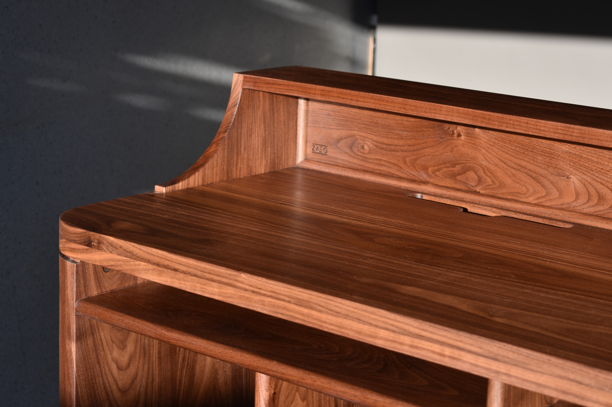
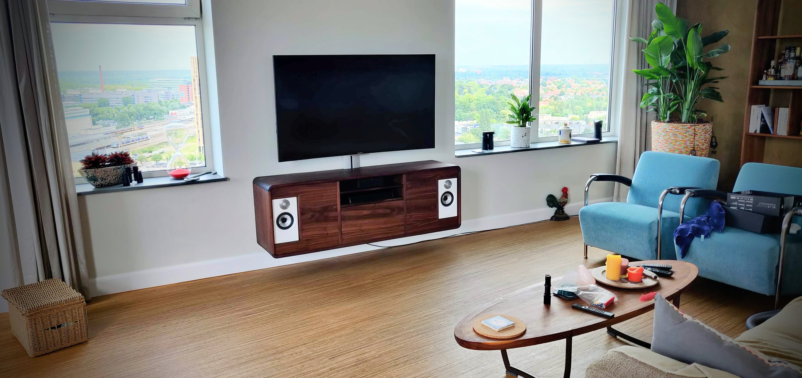

Unieke houten meubels op maat met zorg ontworpen en met precisie gemaakt
Over ZAEG
Vakmanschap en precisie
Bij ZAEG draait alles om vakmanschap en precisie in houtbewerking. Elk maatwerk meubelstuk dat ik maak, is het resultaat van gedetailleerd machine- en handwerk, met aandacht voor elk aspect van het ontwerp. Van het zorgvuldig selecteren van het juiste hout tot de laatste afwerking, ik zorg ervoor dat elk project met dezelfde toewijding en passie wordt uitgevoerd.
Unieke maatwerk ontwerpen
Ieder meubel is uniek en wordt volledig afgestemd op de specifieke wensen van de klant. Ik neem daarom de tijd om samen met mijn klanten het ontwerp te perfectioneren. Dit doen we aan de hand van gedetailleerde 3D-schetsen, zodat het uiteindelijke ontwerp volledig voldoet aan hun visie. Tijdens het bouwproces geef ik klanten toegang tot een live-feed met foto's van de voortgang, en ze zijn altijd welkom om langs te komen en het werk met eigen ogen te zien.
Klantbetrokkenheid en transparantie
Mijn klantgerichte benadering zorgt ervoor dat elk maatwerk meubelstuk niet alleen functioneel en esthetisch is, maar ook een persoonlijke touch heeft. Door nauw samen te werken met mijn klanten, garandeer ik dat hun visie tot leven komt in elk detail van het meubelstuk. Bekijk mijn portfolio om een indruk te krijgen van mijn eerdere projecten en neem contact op voor een vrijblijvend gesprek over uw volgende maatwerk project.
Werkwijze

Creatief ontwerp
Bij ZAEG begint alles met een uniek ontwerp. Ik verken uw ideeën en zet ze om in gedetailleerde 3D-modellen. Hierdoor kunnen we samen verschillende versies uitproberen, zodat het meubelstuk perfect aansluit bij uw visie. Met deze aanpak krijgt u een duidelijk beeld van het eindresultaat voordat we met de bouw beginnen.
Transparant bouwproces
Tijdens het bouwproces houd ik u regelmatig op de hoogte van de voortgang met updates en foto's. U krijgt een kijkje in het proces en ziet hoe uw meubelstuk langzaam maar zeker vorm krijgt. U bent ook altijd welkom om langs te komen in mijn werkplaats. Op deze manier kunt u het project volgen en samen met mij de ontwikkeling van uw unieke meubelstuk ervaren.

Zorgvuldige aflevering
Wanneer uw meubelstuk klaar is, zorg ik voor een zorgvuldige aflevering bij u thuis. Ik ben er op het afgesproken moment om alles netjes te bezorgen en ervoor te zorgen dat het meubelstuk perfect op zijn plek staat. Ik ga pas weg als alles klopt en u tevreden bent met het resultaat.
Galerij
Platenkast / DJ Booth
Voor deze opdracht ging ik aan de slag voor een klant met een duidelijke visie én gevoel voor stijl. De wens: een DJ Booth die niet alleen praktisch dient als draaitafel en een uitgebreide vinylcollectie, maar ook perfect past bij de sfeer van een karakteristieke jaren ’30 woning. Het resultaat is een modulair meubel, uitgevoerd in Amerikaans walnoot en gekenmerkt door afgeronde vormen en een warme, tijdloze uitstraling. De kast biedt volop ruimte voor vinylplaten en apparatuur, met een doordachte indeling, open achterzijde en ruimte voor kabels die via het werkblad verdwijnen in de poten, zodat het meubel ook vrijstaand tot zijn recht komt. Deze DJ booth combineert functionaliteit en esthetiek in een persoonlijk ontwerp dat volledig is afgestemd op de wensen van de klant – met aandacht voor muziek, interieur en vakmanschap.
Dressoir
De klant zocht een decoratief dressoir met een retro uitstraling, geschikt om fotoboeken, kookboeken en magazines in te presenteren. Er was al een globaal idee van de gewenste afmetingen en vormgeving. Na een aantal ontwerpiteraties is dit het resultaat. De afgeronde hoeken, het ribglas en de open frameconstructie versterken de retro look. Het meubel is gemaakt van massief iroko, een duurzame hardhoutsoort met een warme, natuurlijke kleur. Een uniek ontwerp waar ik met veel plezier aan heb gewerkt.
Wijnrek
Dit project begon met een idee: een open meubel. En een noodzaak: ruimte voor wijn. Vele zaagsnedes later is dit wijnrek het resultaat. Het is gemaakt van eikenhout, biedt plek aan 24 flessen wijn, en heeft bovenin een apart vak voor andere dranken – functioneel én overzichtelijk. Ook qua uitstraling klopt het ontwerp. De open lattenstructuur geeft het rek een transparant, luchtig effect dat speels is om naar te kijken zonder aan rust in te boeten.
Kruidenrek
Dit compacte kruidenrek op maat is ontworpen met oog voor detail en contrast. Het is gemaakt van massief eikenhout, met accenten in iroko die zorgen voor warmte en karakter. De hoeken zijn in verstek gezaagd en versterkt met inliggende lamellen, een oude houtbewerking techniek die zowel sterk als visueel verfijnd is. De legplanken zijn met deuvels bevestigd voor extra stabiliteit. Een mooi project waarin ik mijn creativiteit en gevoel voor detail goed kwijt kon.
Cadeaudoos
Ter gelegenheid van mijn eigen bruiloft ontwierp en vervaardigde ik een cadeaudoos van massief beukenhout. De doos is opgebouwd met traditionele zwaluwstaartverbindingen, die zowel zorgen voor een sterke constructie als een ambachtelijke uitstraling. Het deksel is voorzien van een persoonlijke gravure: een bergsilhouet en de bestemmingen van de huwelijksreis, zorgvuldig met de hand uitgefreesd. Het is een prachtige herinnering aan een bijzondere mooie tijd!
Contact
Heeft u vragen of wilt u zelf een uniek stuk laten maken? Neem contact op!


 ZAEGhoutbewerking@gmail.com
ZAEGhoutbewerking@gmail.com
 0634380849
0634380849